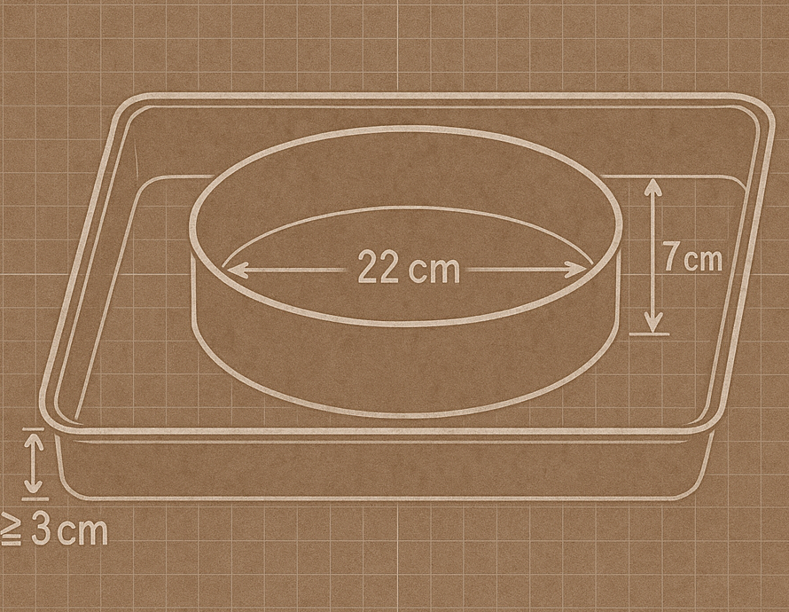

Женя и Наташа пересекли океан и остров Ломбок, чтобы попасть в пекарню Kokina, где Женя научился готовить лучший чизкейк, который он пробовал в Индонезии. Правда, до тех пор, пока сам не стал его готовить ещё лучше.
Этап 1. Подготовка основания
Ингредиенты для основы
- Молочное печенье Lotus Biscoff и Marie — 50 и 150 грамм соответственно
- Топленое масло (марка Anchor) - 80 грамм
Инструкции
- Печенье необходимо мелко измельчить, затем добавить растопленное масло и равномерно перемешать.
- Выложите смесь в форму, утрамбуйте и поставьте в холодильник, пока готовим тесто.
Этап 2. Тесто для чизкейка
Ингредиенты
- Сливочный сыр марки Anchor - 580 грамм
- Сахар - 110 грамм
- Натуральный йогурт марки «Биокул» - 65 грамм
- Взбитые сливки марки Anchor 35 грамм
- Яйца - 3 шт., целых
- Ванильный экстракт марки Jansen 1 ч.л.
Инструкции
- В миксере взбейте сливочный сыр до состояния мягкой муссовой массы.
- Добавьте сахар и тщательно перемешайте, чтобы в смеси не было крупинок и комочков.
- Установите миксер на самую низкую скорость и добавляйте яйца по одному.
- Добавьте ванильный экстракт, йогурт и взбитые сливки.
- Разогрейте духовку до 180 градусов.
Этап 3. Выпечка конечного продукта
На что следует обратить внимание:
- Убедитесь, что тесто для чизкейка имеет однородную консистенцию и текстуру. Для этого можно использовать сито.
Инструкции

- Вылейте тесто на основу из шага 1, которая уже остыла.
- В отдельную форму, большую, чем форма для чизкейка, налейте 200 мл воды (см. рисунок).
- Оставьте выпекаться примерно на 60–90 минут, в зависимости от типа духовки и распределения тепла.
- Охладите при комнатной температуре в течение часа, а затем поставьте охлаждаться в холодильник на 2–4 часа.
Ваш торт готов к подаче!